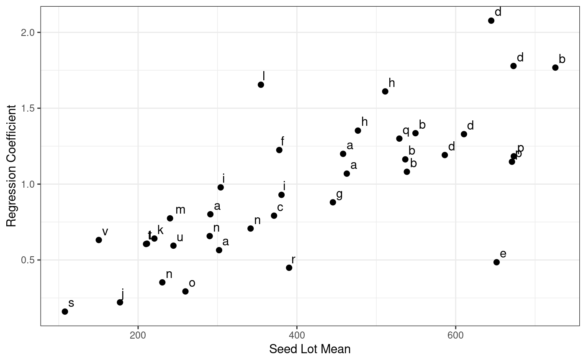
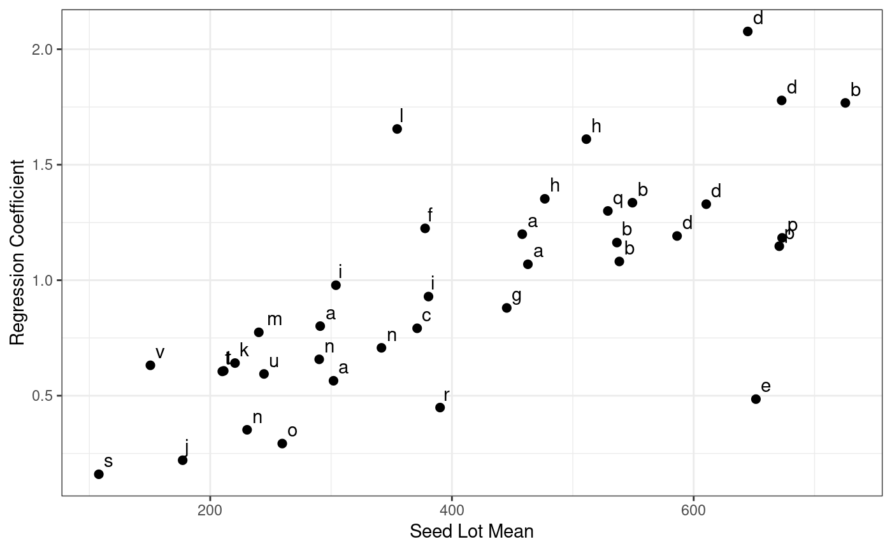

Exam5.2 presents the height of 37 seedlots from 6 sites.
References
Williams, E.R., Matheson, A.C. and Harwood, C.E. (2002).Experimental Design and Analysis for Tree Improvement. CSIRO Publishing.
See also
Examples
data(DataExam5.2)
library(tidyverse)
library(ggplot2)
# Pg.75
fm5.7 <- aov(formula = height~env*gen
,data = DataExam5.2
#, subset
#, weights
#, na.action
, method = "qr"
, model = TRUE
, x = FALSE
, y = FALSE
, qr = TRUE
, singular.ok = TRUE
, contrasts = NULL
)
# Pg. 77
anova(fm5.7)
#> Warning: ANOVA F-tests on an essentially perfect fit are unreliable
#> Analysis of Variance Table
#>
#> Response: height
#> Df Sum Sq Mean Sq F value Pr(>F)
#> env 5 4157543 831509 NaN NaN
#> gen 36 4425296 122925 NaN NaN
#> env:gen 150 1351054 9007 NaN NaN
#> Residuals 0 0 NaN
fm5.9 <- aov(formula = height~env*gen
,data = DataExam5.2
#, subset
#, weights
#, na.action
, method = "qr"
, model = TRUE
, x = FALSE
, y = FALSE
, qr = TRUE
, singular.ok = TRUE
, contrasts = NULL
)
# Pg. 77
anova(fm5.9)
#> Warning: ANOVA F-tests on an essentially perfect fit are unreliable
#> Analysis of Variance Table
#>
#> Response: height
#> Df Sum Sq Mean Sq F value Pr(>F)
#> env 5 4157543 831509 NaN NaN
#> gen 36 4425296 122925 NaN NaN
#> env:gen 150 1351054 9007 NaN NaN
#> Residuals 0 0 NaN
b<-anova(fm5.9)
#> Warning: ANOVA F-tests on an essentially perfect fit are unreliable
Res <- length(b[["Sum Sq"]])
df <- 384
MSS <- 964
b[["Df"]][Res] <- df
b[["Sum Sq"]][Res] <- MSS*df
b[["Mean Sq"]][Res] <- b[["Sum Sq"]][Res]/b[["Df"]][Res]
b[["F value"]][1:Res-1] <- b[["Mean Sq"]][1:Res-1]/b[["Mean Sq"]][Res]
b[["Pr(>F)"]][Res-1] <- df(b[["F value"]][Res-1],b[["Df"]][Res-1],b[["Df"]][Res])
# Pg. 77
print(b)
#> Analysis of Variance Table
#>
#> Response: height
#> Df Sum Sq Mean Sq F value Pr(>F)
#> env 5 4157543 831509 862.5608 NaN
#> gen 36 4425296 122925 127.5154 NaN
#> env:gen 150 1351054 9007 9.3434 < 2.2e-16 ***
#> Residuals 384 370176 964
#> ---
#> Signif. codes: 0 '***' 0.001 '**' 0.01 '*' 0.05 '.' 0.1 ' ' 1
X1<- DataExam5.2 %>%
group_by(env) %>%
summarize(SiteMean=mean(height))
Data5.2new<-merge(DataExam5.2,X1, by.x="env",by.y="env")
RegCoeff <- function(Data5.2new)
{
fm <- lm(formula = height ~ SiteMean
,data = Data5.2new)
setNames(data.frame(t(coef(fm)))
,c("intercept", "slope"))
}
RegCoeff1 <- Data5.2new %>%
group_by(gen) %>%
do(RegCoeff(.))
SeedLot.Mean <- DataExam5.2 %>%
group_by(gen) %>%
summarize(mean(height))
Tab5.14 <- data.frame(RegCoeff1,Mean=SeedLot.Mean$'mean(height)')
Tab5.14
#> gen intercept slope Mean
#> 1 G01 -24.12917 0.8012542 291.0000
#> 2 G02 79.90597 0.5647011 302.0000
#> 3 G03 42.38694 1.0690361 462.8333
#> 4 G04 -13.55169 1.1994013 458.1667
#> 5 G05 113.27134 1.0811956 538.5000
#> 6 G06 79.06471 1.1630848 536.5000
#> 7 G07 -249.27453 1.7677283 725.5000
#> 8 G08 24.03798 1.3356273 549.3333
#> 9 G09 29.02311 0.7918756 371.2000
#> 10 G10 16.40936 1.1915243 586.2500
#> 11 G11 -95.67880 1.7784358 672.8000
#> 12 G12 48.88193 1.3292240 610.4000
#> 13 G13 -302.60277 2.0771122 644.7500
#> 14 G14 383.97513 0.4851494 651.5000
#> 15 G15 -151.31826 1.2245007 377.8000
#> 16 G16 99.20246 0.8800798 445.3333
#> 17 G17 -140.71988 1.6108024 511.2000
#> 18 G18 -55.08462 1.3524661 476.8333
#> 19 G19 -20.93149 0.9292357 380.6000
#> 20 G20 -80.80719 0.9784191 304.0000
#> 21 G21 93.42999 0.2206792 177.2000
#> 22 G22 -31.73622 0.6413413 220.5000
#> 23 G23 -346.93584 1.6548668 354.6667
#> 24 G24 -53.78319 0.7744534 240.2000
#> 25 G25 63.49412 0.7072875 341.6667
#> 26 G26 31.57780 0.6574936 290.1667
#> 27 G27 91.89249 0.3524264 230.5000
#> 28 G28 133.06427 0.2928326 259.6000
#> 29 G29 219.60226 1.1473099 670.8333
#> 30 G30 207.74972 1.1833792 673.1667
#> 31 G31 17.77530 1.2998509 529.0000
#> 32 G32 213.70027 0.4486873 390.1667
#> 33 G33 44.95404 0.1598783 107.8333
#> 34 G34 -12.61910 0.6053085 210.0000
#> 35 G35 -27.73651 0.6074404 211.1667
#> 36 G36 25.93782 0.5942776 244.5000
#> 37 G37 -47.98264 0.6316509 150.5000
ggplot(Tab5.14,aes(x=Mean,y=slope))+
geom_point(size=2)+
theme_bw()+
geom_text(aes(label=gen),hjust=0, vjust=0)+
labs(x="Seed Lot Mean",y="Regression Coefficient")
 Code<-c("a","a","a","a","b","b","b","b","c","d","d","d","d","e","f","g",
"h","h","i","i","j","k","l","m","n","n","n","o","p","p","q","r",
"s","t","t","u","v")
Tab5.14$Code<-Code
ggplot(Tab5.14,aes(x=Mean,y=slope))+
geom_point(size=2)+
theme_bw()+
geom_text(aes(label=Code),hjust=-0.5, vjust=-0.5)+
labs(x="Seed Lot Mean",y="Regression Coefficient")

Code<-c("a","a","a","a","b","b","b","b","c","d","d","d","d","e","f","g",
"h","h","i","i","j","k","l","m","n","n","n","o","p","p","q","r",
"s","t","t","u","v")
Tab5.14$Code<-Code
ggplot(Tab5.14,aes(x=Mean,y=slope))+
geom_point(size=2)+
theme_bw()+
geom_text(aes(label=Code),hjust=-0.5, vjust=-0.5)+
labs(x="Seed Lot Mean",y="Regression Coefficient")
